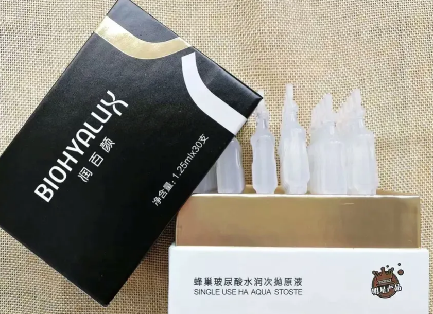
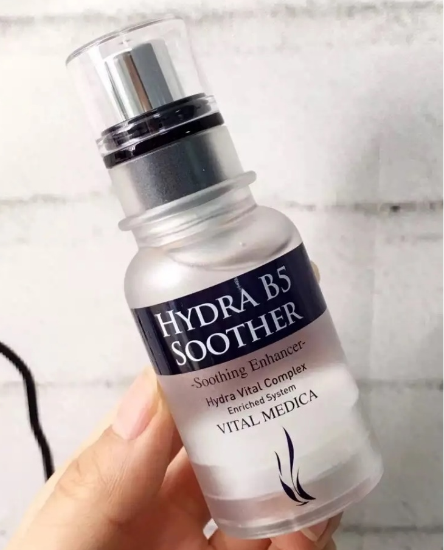

玻尿酸精华液
日本太阳社玻尿酸原液

玻尿酸钠，透明质酸钠是一种强效保湿剂、肌肤调理剂，天然存在于角膜内皮中，可吸收其本身重量1000倍水分，是目前最好的保湿剂之一。至于用作防腐剂的成分，稀释到一定程度就不会有刺激性，最后一行的成分，我之前也说过了，一直有争议性，如果量控制的很好，也没有太大的问题，总体上来说，这款玻尿酸还是比较安全的~
AHCB5蓝瓶玻尿酸精华

AHC家一直打的牌子就是敏感肌和孕妇可用，成分比太阳社玻尿酸要多一些，太阳社玻尿酸就是简单粗暴.有一些敏感肌可能会有轻微刺痛感，但是并无任何致敏的证据.
华熙颐宝

最近新兴起的一款玻尿酸次抛原液，它和润百颜是一家，但是整体性价比要高于润百颜。先是使用感，特别滋润又清爽，吸收特别快，而且有专门适用于油皮的款，简直好开心有木有！要知道油皮真的炒鸡难过，皮肤油但不代表不需要滋养，但是不合适的精华啊玻尿酸会对油皮产生负担，最直观的表现就是：闷痘（这个楼主真是为自己捧一把辛酸泪）华熙颐宝这款玻尿酸，据官方表示拥4D什么的专利分子，玻尿酸浓度高吸收快，用完之后也不会搓泥，1.35ml一支，单支包装便于携带，性价比超高.
西班牙MARTIDERM

这款产品真是超出预料，原以为又是个炒作红的外国牌子，但是产品真的香味超级好闻，涂在脸上吸收也非常快，干爽不油腻，产品包装也比较高大上，拿去拍照hin是好看
德国芭乐雅

外观颜值挺高的，上脸使用效果还好，吸收还挺快，但精华过于稀薄，不粘稠，有点像一般的精华液，而不是玻尿酸原液。
华熙润百颜

带货女王范冰冰推荐的一款玻尿酸次抛原液，被炒得灰常灰常火爆。产品本身浓度高吸收也很快，但稍微有些油腻，液体有些黏黏的，用完之后脸上可能会出现搓泥的现象。
韩国ahc

这个牌子前几年可谓是非常火爆，热度非常高，楼主也跟随潮流买了他家的水乳。味道非常香，质地涂起来很轻薄滋润度还好，但对油皮特别不友好，因为出油宇宙无敌超级快（迷之微笑）跑题了，他家的产品对外宣传都是含有玻尿酸，敏感肌孕妇都可以使用，这款精华的使用感还不错，就是量有点少，在同价位或是同地位的产品中，价格微微的贵了点，还有就是玻璃瓶的外包装看着是蛮高大上的，但不容易携带，不适合外出使用。